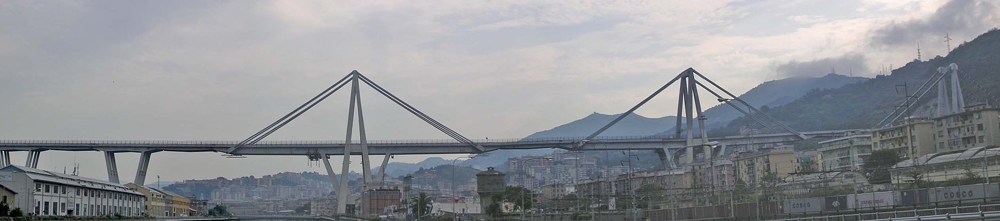
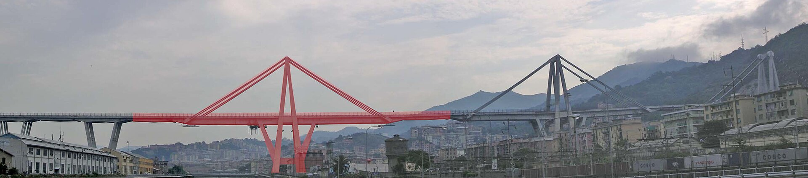
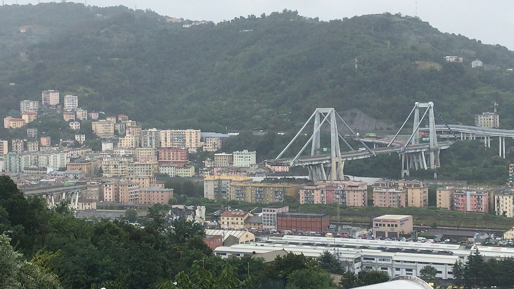
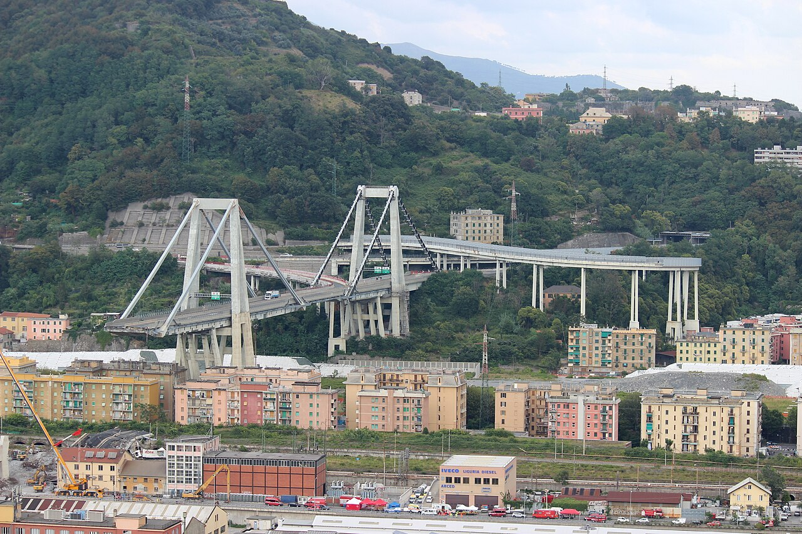

Génova · 1963-2018
Una autopista suspendida sobre una ciudad en funcionamiento
El viaducto Polcevera, conocido como puente Morandi por su proyectista Riccardo Morandi, se construyó entre 1963 y 1967 para llevar la autopista A10 sobre el río, líneas ferroviarias, industrias y barrios habitados. No era solo una estructura: era una pieza de una red logística que conectaba el puerto, el oeste de Génova y la frontera francesa.
La presencia de viviendas, ferrocarriles y actividad industrial bajo el tablero multiplicaba las consecuencias de cualquier interrupción. Esta exposición formaba parte del riesgo del sistema aunque no modificara la resistencia de una sección de hormigón.

Pocos tirantes, grandes elementos y una imagen inconfundible
La parte más singular estaba formada por tres sistemas atirantados, asociados a las pilas 9, 10 y 11. Sus torres alcanzaban unos 90 metros y sostenían el tablero mediante un número muy reducido de grandes tirantes. Cada tirante reunía cables de acero dentro de una envolvente de hormigón pretensado.
La solución buscaba que el hormigón permaneciera comprimido, protegiera el acero y aportara rigidez frente a las variaciones de carga. El resultado era estructuralmente diferente de un puente atirantado moderno con muchos cables independientes y sustituibles. Aquí, cada elemento principal concentraba una parte importante de la función resistente.

La protección se convirtió también en una barrera para observar
Encerrar los cables en hormigón pretendía protegerlos del ambiente y estabilizar su respuesta. Pero el mismo recubrimiento hacía difícil observar directamente el estado de los alambres, los huecos de inyección, la pérdida de sección o la eficacia real del pretensado. La variable decisiva podía quedar oculta dentro de un elemento de gran responsabilidad.
Génova combina aerosol marino, humedad y un entorno históricamente industrial. Las fisuras, la entrada de agua y la corrosión no actúan como un suceso instantáneo: modifican lentamente las propiedades que el modelo de cálculo considera disponibles. Cuando una técnica de inspección solo observa indicios indirectos, la incertidumbre debe entrar explícitamente en la decisión.
Reparar una parte no resuelve automáticamente el sistema
El puente necesitó intervenciones desde décadas antes del colapso. A comienzos de los años noventa, el sistema atirantado de la pila 11 fue reforzado mediante cables exteriores después de detectarse degradación en sus tirantes. Las pilas 9 y 10 conservaron la configuración original.
Esta diferencia importa para la gestión: una reparación es también nueva información sobre el resto de la infraestructura. Si un componente equivalente muestra una degradación relevante, el propietario debe justificar por qué los demás pueden continuar, con qué margen, durante cuánto tiempo y bajo qué vigilancia.
Inspecciones, ensayos, proyectos de refuerzo y decisiones de inversión fueron acumulando documentos durante años. El problema docente no es solo si existía información, sino si esa información se integró en una imagen única y actualizada del riesgo.
Unos 250 metros desaparecieron en segundos
El 14 de agosto de 2018, alrededor de las 11:36 y durante una tormenta, colapsaron la pila 9, sus tirantes y una extensa sección del tablero. Vehículos que circulaban por la A10 cayeron sobre el río, las vías y la zona industrial. Murieron 43 personas.

El accidente interrumpió además una arteria urbana y portuaria, obligó a evacuar edificios bajo los tramos restantes y abrió una emergencia de movilidad, demolición y reconstrucción. Las consecuencias excedieron ampliamente el límite físico de la estructura caída.
Una secuencia técnica no cabe en la frase «faltó mantenimiento»
La Comisión Inspectora del Ministerio italiano estudió la geometría de los restos, los modos de rotura y la documentación disponible. Investigaciones posteriores han analizado la pérdida de capacidad de los tirantes, la corrosión de los cables, defectos internos y la secuencia de fallo del sistema de la pila 9.
Para aprender del caso conviene separar tres planos. El primero es el mecanismo físico que inició y propagó el colapso. El segundo es el estado real de una estructura envejecida y difícil de inspeccionar. El tercero es cómo las organizaciones transformaron —o no transformaron— inspecciones, anomalías y proyectos de intervención en una decisión de explotación.

El proyecto debe conservar una demostración actualizada de seguridad
En una infraestructura existente no basta con archivar informes sucesivos. Hace falta un modelo vivo que relacione inventario, planos, reparaciones, resultados de inspección, cargas reales, deterioro esperado y consecuencias del fallo. Cada nueva observación debe poder cambiar una decisión.
| Pregunta de gestión | Documento o decisión necesaria |
|---|---|
| ¿Qué elementos son críticos y poco redundantes? | Mapa de criticidad y análisis de consecuencias. |
| ¿Qué daños pueden quedar ocultos? | Plan de inspección con alcance, fiabilidad y limitaciones explícitas. |
| ¿Cómo cambia la capacidad con el tiempo? | Modelo de deterioro actualizado con ensayos y reparaciones. |
| ¿Qué resultado obliga a restringir o cerrar? | Umbrales de actuación definidos antes de recibir el dato. |
| ¿Quién integra toda la información? | Responsable único de la demostración de seguridad. |
| ¿Cuándo deja de ser razonable reparar? | Comparación transparente entre refuerzo, limitación y sustitución. |
La sustitución también fue un proyecto de emergencia
Los restos del viaducto se demolieron en 2019. En el mismo corredor se construyó el viaducto Genova San Giorgio, inaugurado en agosto de 2020. La nueva obra debía restablecer con rapidez una conexión estratégica sin olvidar los requisitos contemporáneos de robustez, inspección, mantenimiento y monitorización.
La rapidez no eliminó las fases del proyecto; obligó a solaparlas y a gobernar con precisión sus interfaces. Demolición, gestión de residuos, proyecto, fabricación, montaje, pruebas y puesta en servicio compartieron un entorno urbano que continuaba funcionando.
Cómo utilizar el caso en la asignatura
- Estudios previos: valorar no solo coste de construcción, sino inspeccionabilidad, mantenimiento, interrupciones y consecuencias del fallo.
- Ingeniería básica: comparar tipologías por robustez, número de elementos críticos y posibilidad de sustitución.
- Ingeniería de detalle: diseñar protección frente a corrosión, drenaje, accesos y sistemas de auscultación.
- Documentación: mantener trazabilidad entre planos originales, reparaciones, inspecciones y modelo resistente vigente.
- Gestión del riesgo: convertir resultados inciertos en límites de explotación y decisiones con responsables identificados.
- Viabilidad: comparar reparación y sustitución incorporando afecciones urbanas, económicas y sociales.
Referencias y recursos
- Ministero delle Infrastrutture e dei Trasporti: relación de la Comisión Inspectora
Cinco tomos con la investigación técnica, documentación examinada y análisis del colapso.
- Riccardo Morandi: Viaducto sobre el Polcevera, en Génova
Presentación contemporánea del proyecto publicada en 1968 por Informes de la Construcción.
- Causes of the Collapse of the Polcevera Viaduct in Genoa, Italy
Estudio técnico sobre el sistema resistente, su estado y posibles secuencias de colapso.
- Very High Cycle Corrosion Fatigue Study of the Collapsed Polcevera Bridge
Análisis específico de la interacción entre corrosión y fatiga en los cables.
- Commissario Straordinario per la Ricostruzione
Documentación oficial sobre demolición, contratación y construcción del viaducto sustitutorio.